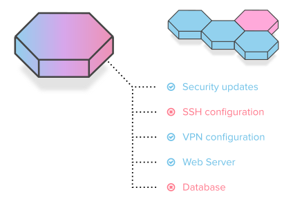
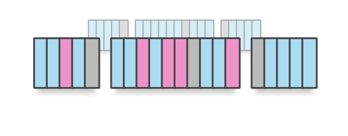

Security Configuration Management with DevOps
Stop attackers from breaking into your systems by exploiting preventable configuration issues. Find a simple and efficient solution in the VulcanoSec Suite.

Integrate with Automation
VulcanoSec is designed to work with all major automation frameworks, including Chef and Puppet. We add the security layer to your existing configuration management.
Detect and Correct
Add a layer to your infrastructure automation, which ensures every components security and compliance. By connecting defect detection with infrastructure automation you can reduce manual overhead and the risk for errors.

Risk Management
VulcanoSec supports Risk Management solutions and complements processes. Findings from Compliance Scans and Security Automation can be used separately or connected directly into your SIEM solution.
Configuration Drift Detection
Attacks will often leave footprints in your system configuration. VulcanoSec will automatically detect these changes and alert your operations team. Any damaging changes are quickly corrected as well.

Maintain Requirements
With rapidly changing environments, it's easy to loose track of security levels. VulcanoSec provides a constantly updating view and solution to your configuration needs.
Verify Deliverables
Whenever you purchase IT services and infrastructure use VulcanoSec to verify its security. Identify shortcomings early and address them continuously.